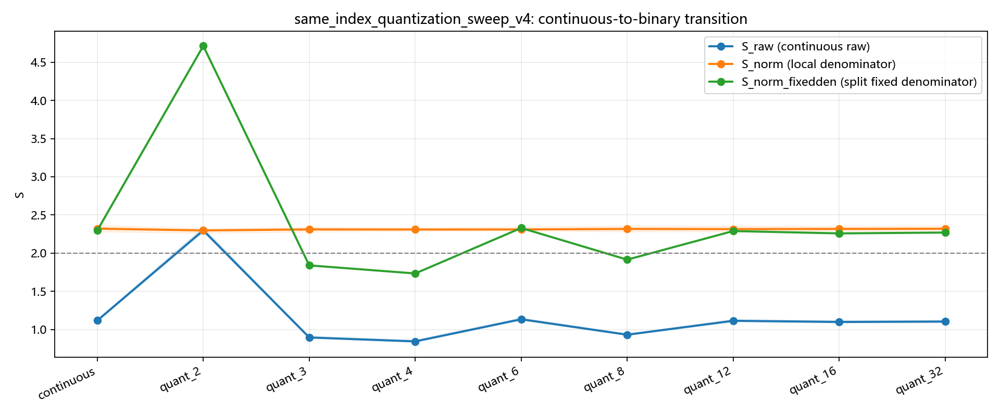
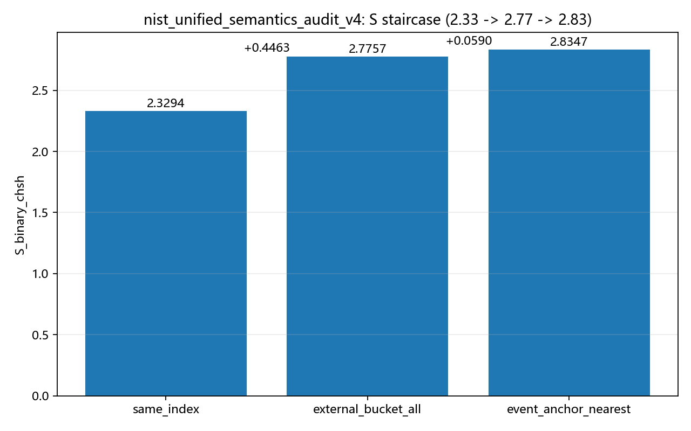
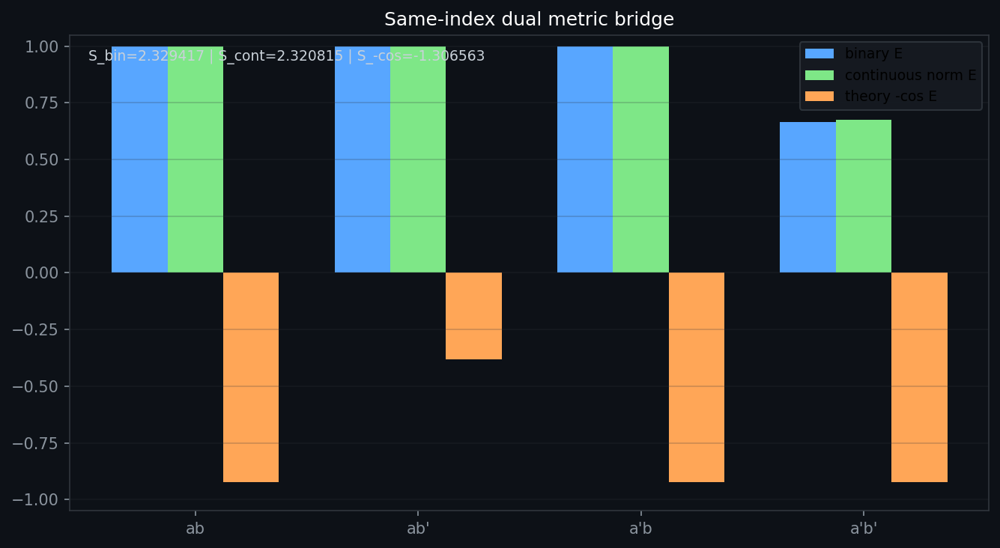

Bell Audit (v5): How Binarization and Pairing Semantics Co-Shape CHSH Metrics
Abstract
This manuscript rewrites and refocuses the Bell audit around one core question: if the underlying event stream is fixed, why can CHSH shift strongly when only binarization and pairing semantics are changed?
On the NIST stream, we confirm: continuous S_raw = 1.117683, while binarized S_raw(quant_2) = 2.297779; under semantic decomposition, same_index = 2.329417, external_bucket_all = 2.775687, and event_anchor_nearest = 2.834670.
These results indicate that Bell headline values are shaped not only by physical mechanisms, but also by statistical pipeline definitions. We also provide an educational explanation so non-specialist readers can understand how denominator policy, pairing logic, and post-selection alter the apparent conclusion.
1. Background and Problem Definition
Bell/CHSH is often used to discuss whether classical explanations are sufficient. In engineering pipelines, however, the formula does not consume all raw events directly. It consumes processed, countable events:
- Step 1: discretize continuous observations (e.g., 2-level, 3-level quantization);
- Step 2: pair events under a specific time/index rule;
- Step 3: decide which pairs enter the denominator and which are discarded.
If these steps strongly influence the result, then a high S is partly a pipeline-configuration effect, not purely a direct readout of the underlying mechanism.
2. Data and Methods (v4 Re-audit Frame)
2.1 Data and script sources
- Result package:
battle_results/nist_clock_reference_audit_v1/results/ - Email summary:
battle_results/nist_clock_reference_audit_v1/email_pack_v4/EMAIL_SUMMARY_v4_EN.md - Key scripts:
scripts/explore/nist_same_index_quantization_sweep_v4.py,scripts/explore/nist_unified_semantics_audit_v4.py
2.2 Three evidence chains reproduced here
- Binarization chain: compare continuous and 2-level outputs under the same
same_indexpairing. - Semantic premium chain: compare
same_index -> external_bucket_all -> event_anchor_nearest. - Robustness-boundary chain: verify closure checks (anchor symmetry, bounded edge sensitivity, etc.).
2.3 Experimental principle (to avoid "black-box statistics" concerns)
This study does not alter the underlying event stream. It only changes the protocol that converts events into countable samples. Core principle: CHSH is computed from rule-filtered pairs, not from raw rows directly.
- Input layer: fixed event stream (same rows, same order);
- Representation layer: continuous vs discretized outputs (2-level, 3-level, etc.);
- Pairing layer:
same_index,external_bucket_all,event_anchor_nearest; - Scoring layer: same CHSH form, compared across protocols.
3. Main Results
3.1 Large shift induced by binarization
In same_index_quantization_sweep_v4:
- Continuous:
S_raw = 1.117683(95% CI:1.097130 ~ 1.138496) - 2-level quantized:
S_raw(quant_2) = 2.297779
Meaning: with the same data and same pairing framework, changing representation alone can produce a large jump.

3.2 Semantic premium decomposition (2.33 -> 2.77 -> 2.83)
In nist_unified_semantics_audit_v4:
same_index S_binary_chsh = 2.329417external_bucket_all S_binary_chsh = 2.775687(relative+0.446270)event_anchor_nearest S_binary_chsh = 2.834670(additional+0.058983)
This forms a protocol-premium staircase: numerical uplift appears in sync with semantic escalation.

3.3 Closure boundaries (to prevent over-interpretation)
In nist_revival_20pct_closure_v4:
same_index_not_near_2p82 = Truepure_bucket_in_2p8_zone = Trueanchor_asymmetry_small = True(delta_abs = 0.001356)edge_sensitivity_bounded = True
Interpretation: the ~2.8 zone is not a natural extension of same_index; it is tied to specific semantic layers.

3.4 Key numeric table (reviewer quick scan)
- Fixed-stream pair count:
pair_count = 128016 - Continuous metric:
S_raw = 1.117683(95% CI:1.097130 ~ 1.138496) - 2-level metric:
S_raw(quant_2) = 2.297779 - Semantic staircase:
2.329417 -> 2.775687 -> 2.834670 - Stair increments:
+0.446270and+0.058983 - Anchor symmetry difference:
delta_abs = 0.001356
4. Student-Friendly Explanation: Why does this happen?
You can treat CHSH like a score:
- Numerator: pairs that satisfy certain pattern rules;
- Denominator: total pairs allowed into the statistic.
If you change which items are counted in the total (denominator policy), or first force continuous values into pass/fail bins (binarization), the final average can change a lot. So this paper does not claim that one theory is fully overthrown. It argues that data-processing protocol must be audited as seriously as the physical model.
5. Conclusions and Review Recommendations
5.1 Conclusions within scope
- Bell metrics on this stream show strong binarization sensitivity.
- Bell metrics on this stream also show strong pairing-semantics sensitivity.
- Therefore, headline
Sclaims should always publish denominator logs, semantic definitions, and counterfactual controls together.
5.2 Recommendations for follow-up review
- Report inclusion rules with every headline
Svalue; - Provide at least one side-by-side comparison between
same_indexand a more aggressive semantic mode; - Require closure checks to avoid mistaking protocol premium for mechanism inevitability.
6. Minimal Reproducibility Path
Run from repository root:
Core outputs:
battle_results/nist_clock_reference_audit_v1/results/same_index_quantization_sweep_v4.jsonbattle_results/nist_clock_reference_audit_v1/results/nist_unified_semantics_audit_v4.jsonbattle_results/nist_clock_reference_audit_v1/results/nist_revival_20pct_closure_v4.json
7. Boundary Statement
This is a methodological audit manuscript: it demonstrates that statistical conclusions are strongly protocol-dependent. It does not claim final ontology-level victory of any single theory. Stronger claims require cross-platform, cross-dataset, and cross-device joint validation.
8. Anticipated Reviewer Questions and Responses
Q1: Is this just data cherry-picking?
A: No. The event stream is fixed; only quantization and pairing semantics are varied, with closure checks reported.
Q2: Are favorable metrics selectively reported?
A: No. Continuous, binarized, and multi-semantic outputs are presented together, including low-value regions and explicit deltas.
Q3: Does the ~2.8 zone imply mechanism inevitability?
A: No. Closure evidence shows this zone is tied to specific semantic modes, not an unavoidable extension of same_index.
Q4: Does this paper falsify standard quantum theory?
A: No. This is a methodological audit showing protocol sensitivity; ontology-level claims require broader independent validation.